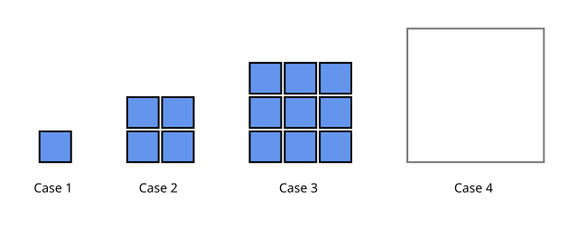
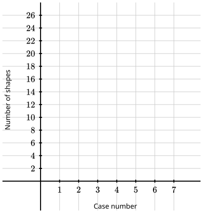
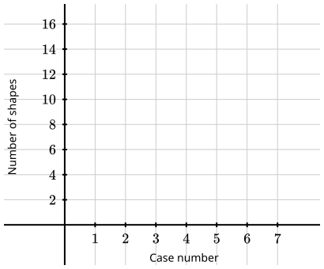
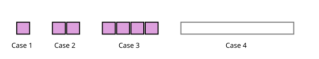
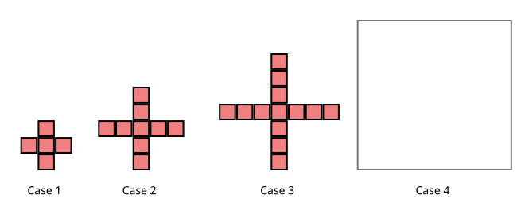
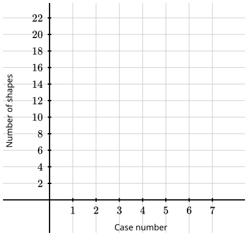

Objectives
-
Given a visual pattern, I can draw the next case, record the number of shapes in a table, describe in my own words how the pattern grows, and plot the counts on a graph.

| Case (\(n\)) | \(1\) | \(2\) | \(3\) | \(4\) | \(5\) |
|---|---|---|---|---|---|
| Shapes | \(1\) | \(4\) | \(9\) |

| Case (\(n\)) | \(1\) | \(2\) | \(3\) | \(4\) | \(5\) |
|---|---|---|---|---|---|
| Shapes | \(1\) | \(3\) | \(6\) |


| Case (\(n\)) | \(1\) | \(2\) | \(3\) | \(4\) | \(5\) |
|---|---|---|---|---|---|
| Shapes | \(1\) | \(2\) | \(4\) |

| Case (\(n\)) | \(1\) | \(2\) | \(3\) | \(4\) | \(5\) |
|---|---|---|---|---|---|
| Shapes | \(5\) | \(9\) | \(13\) |
